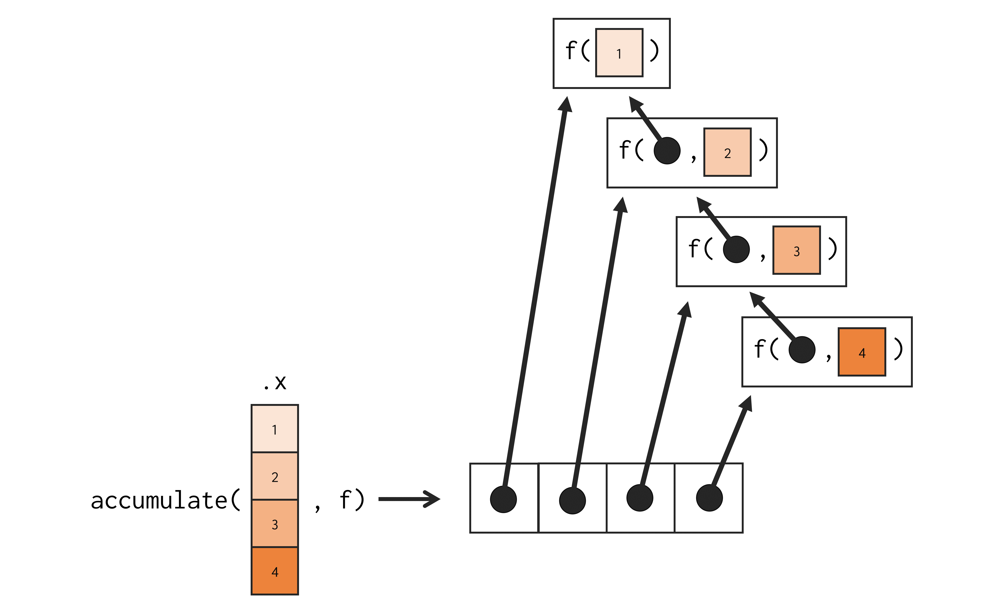

library(tidyverse)
library(purrr)16 Functional programming com purrr
16.1 Introdução
Neste capítulo, vamos introduzir um outro pacote do tidyverse, chamado de purrr. Esse pacote provê um conjunto de ferramentas que ampliam as funcionalidades de functional programming do R. Para ter acesso às funções desse pacote, você pode chamar tanto pelo tidyverse quanto pelo purrr diretamente.
16.2 Loops implícitos com a família map
A principal fraqueza de um for loop é que ele foca demasiada atenção sobre os objetos envolvidos na iteração. Isso por um lado é bom, pois você consegue identificar todas as “dependências” de um for loop, mas, por um outro lado, é ruim. Pois na maioria das vezes, é muito mais importante identificarmos a ação, a transformação ou a funcionalidade que está sendo aplicada sobre esses objetos em cada iteração.
Por exemplo, abaixo temos dois for loops diferentes que aplicam uma determinada operação sobre o objeto tab. O que cada for loop abaixo está fazendo? Qual a diferença entre eles? Após observá-los por um tempo você vai acabar percebendo que a única diferença entre esses dois for loops está na função que está sendo aplicada sobre cada coluna de tab.
tab <- data.frame(
x1 = rnorm(10),
x2 = rnorm(10),
x3 = rnorm(10),
x4 = rnorm(10)
)
vec1 <- vector("double", length = ncol(tab))
for(i in seq_along(tab)){
vec1[i] <- mean(tab[[i]], na.rm = TRUE)
}
vec2 <- vector("double", length = ncol(tab))
for(i in seq_along(tab)){
vec2[i] <- median(tab[[i]], na.rm = TRUE)
}
print(vec1)[1] -0.3913587 0.1314754 0.3503364 -0.2765988print(vec2)[1] -0.5219914 0.5606106 0.6669979 -0.2361631É esse o problema que a família de funções map busca solucionar, ao nos fornecer um meio de construirmos loops em um formato mais funcional, destacando assim, as transformações e funções que estamos aplicando em cada repetição, ao invés dos objetos envolvidos na iteração. Como exemplo, podemos replicar o mesmo exemplo de for loops acima, utilizando a família de funções map, da seguinte forma:
library(purrr)
vec1 <- map_dbl(tab, mean, na.rm = TRUE)
vec2 <- map_dbl(tab, median, na.rm = TRUE)
print(vec1) x1 x2 x3 x4
-0.3913587 0.1314754 0.3503364 -0.2765988 print(vec2) x1 x2 x3 x4
-0.5219914 0.5606106 0.6669979 -0.2361631 Perceba acima, o quão simples e sucinto é para expressarmos uma operação com a família map. Vamos explicar daqui a pouco, em detalhes como essas funções funcionam. Por enquanto, quero apenas destacar que agora com a função map_dbl(), está muito fácil de identificarmos a diferença entre os dois loops acima. Pois a única coisa que está de fato mudando entre uma linha e outra, é a função aplicada sobre cada coluna de tab, que são as funções mean() e median(). Dessa forma, você pode rapidamente entender que o primeiro loop está calculando a média de cada coluna, enquanto o segundo loop, está calculando a mediana.
16.2.1 A família de funções map()
Portanto, o pacote purrr nos oferece a família de funções map, a qual possui 7 membros diferentes, sendo eles:
map(): retorna uma lista.map_dbl(): retorna um vetor atômico do tipodouble.map_chr(): retorna um vetor atômico do tipocharacter.map_int(): retorna um vetor atômico do tipointeger.map_lgl(): retorna um vetor atômico do tipological.map_dfr()emap_dfc(): retornam umdata.frame.
Todas essas 7 funções possuem os mesmos argumentos e realizam exatamente o mesmo trabalho. A única diferença entre elas, está na estrutura de dado em que o resultado é retornado. Tal estrutura é identificada pelo sufixo presente no nome de cada função. Portanto, todas essas funções map aceitam um objeto como input, e retornam como output, um novo objeto de mesmo comprimento que o objeto de input, e na estrutura identificada pelo sufixo no nome da função (WICKHAM; GROLEMUND, 2017).
map_dbl()
map_dbl()
Toda função map possui 3 argumentos principais, sendo eles: 1) .x, que é o objeto sobre o qual map vai iterar, ou, sobre o qual ela vai aplicar o loop; 2) .f, que é a função a ser aplicada sobre cada elemento de .x; e 3) ..., que é a lista de argumentos a serem repassados para a função definida em .f.
Em resumo, todas as funções map buscam aplicar a função definida em .f sobre cada elemento do objeto .x. Consequentemente, o resultado de toda função map é um novo objeto contendo os resultados da função definida em .f aplicada sobre cada elemento do objeto definido em .x. Tal ação, está representada na Figura 16.1.
Portanto, no exemplo anterior, em que aplicamos a função map_dbl() sobre o objeto tab, o que map_dbl() fez, foi criar um loop para aplicar as funções mean() e median() sobre cada elemento de tab. Como tab é um data.frame, cada elemento desse objeto corresponde a uma coluna do data.frame. A medida em que as funções mean() e median() foram sendo aplicadas sobre cada coluna de tab, a função map_dbl() foi coletando e armazenando os seus resultados em um vetor atômico do tipo double. Por fim, a função map_dbl() nos retorna como output, este vetor atômico contendo todos os resultados gerados. A Figura 16.2 apresenta esse processo de forma mais detalhada.
16.2.2 No fundo, estamos utilizando um for loop
No fim das contas, todas as funções map utilizam em algum momento um for loop para aplicar a função .f sobre cada elemento do objeto .x. Um detalhe é que essas funções constroem esse for loop em C, com o objetivo de gerar máxima performance. A título de ilustração, poderíamos reproduzir em R a definição da função map(), da seguinte forma:
map <- function(.x, .f, ...){
resultados <- vector("list", length = length(.x))
for(i in seq_along(.x)){
resultados[[i]] <- .f(.x[[i]], ...)
}
return(resultados)
}
map(tab, mean, na.rm = TRUE)[[1]]
[1] -0.3913587
[[2]]
[1] 0.1314754
[[3]]
[1] 0.3503364
[[4]]
[1] -0.2765988Com essa definição em mente, você também pode rapidamente atribuir as diferenças entre as funções map(), map_dbl(), e todas as demais funções map, à primeira linha dessa definição com a função vector(). Ou seja, a diferença principal entre as funções map() e map_dbl() (ou qualquer outra das funções map) é o tipo de vetor criado pela função vector(). Tal diferença está marcada na Figura 16.3.
Sendo assim, todas as funções map ainda dependem de um for loop para realizar o seu trabalho. Porém, essas funções assumem o trabalho duro de criar esse for loop por você. Como resultado, você economiza parte de seu tempo, e deixa a intenção de seu código mais clara.

map
16.2.3 Se não existe uma solução pronta no R, crie a sua própria
Um dos grandes poderes das funções map, é que elas te ajudam a aplicar as suas ações sobre múltiplos inputs diferentes. Por “suas ações”, quero destacar que, se você não possui uma função já pronta no R que execute a ação que você deseja aplicar sobre cada elemento de seu objeto, você pode muito bem criar uma função personalizada, que aplique exatamente essa ação da forma como você deseja. Replicar depois essa função personalizada para os demais inputs se torna um passo muito simples com as funções map.
Por exemplo, imagine que você tenha uma lista como o objeto l abaixo, onde cada elemento é uma nova lista que pode conter um número variável de elementos. Agora, imagine que você queira identificar quais elementos dessa lista possuem NA’s. Nesse caso, você pode criar uma função como a tem_na() abaixo, que aceita uma lista como input, e utiliza as funções is.na() e any() para descobrir se algum dos elementos dessa lista contém um valor NA. Em seguida, podemos simplesmente replicar essa função para cada elemento da lista l com a função map_lgl().
tem_na <- function(x){
teste <- is.na(x)
resultado <- any(teste)
return(resultado)
}
l <- list(
list(1, 2, 3, NA),
list(24, 12),
list(21, NA, 4),
list(56, 19, 20, 43)
)
vec <- map_lgl(l, tem_na)
vec[1] TRUE FALSE TRUE FALSE16.2.4 Alguns atalhos úteis das funções map
Existem alguns atalhos úteis que você pode utilizar ao definir o argumento .f nas funções map. Por exemplo, suponha que você possua uma lista com várias informações referentes a um determinado aluno. Caso você precise coletar as idades de cada aluno em um vetor atômico por exemplo, você poderia fornecer à função map_dbl(), uma função anônima responsável por extrair o item idade de uma lista de input, como demonstrado abaixo.
alunos <- list(
Ana = list(idade = 15, altura = 1.67),
Bruno = list(idade = 17, altura = 1.75),
Amanda = list(idade = 21, altura = 1.88),
Eduardo = list(idade = 14, altura = 1.62)
)
alunos %>%
map_dbl(function(x) x$idade) Ana Bruno Amanda Eduardo
15 17 21 14 Apesar de bem prático escrevermos uma função anônima dessa forma, podemos utilizar uma notação ainda mais simples. Tal notação consiste em utilizar um til (~) como uma abreviação para a declaração da função anônima, e um ponto final (.) para determinar onde o argumento será posicionado no corpo dessa função anônima. Tendo isso em mente, poderíamos reproduzir o exemplo acima, da seguinte forma:
alunos %>%
map_dbl(~.$idade) Ana Bruno Amanda Eduardo
15 17 21 14 Portanto, o til substitui de certa forma a palavra-chave function, e o ponto final representa o argumento da função, ou, o elemento sobre o qual a função será aplicada. Contudo, como esse processo de extrair informações específicas de uma lista é algo muito comum, as funções map também oferecem um outro atalho, que seria o uso de uma string. Logo, se você deseja extrair um item de uma lista presente em cada elemento de um objeto, você pode simplesmente fornecer o nome desse item em uma string à função map.
alunos %>%
map_dbl("idade") Ana Bruno Amanda Eduardo
15 17 21 14 16.3 Um estudo de caso: aplicando um modelo econométrico sobre diferentes países
Nessa seção, vamos reproduzir o famoso exemplo dado por Hadley Wickham em sua palestra “Managing many models with R”. Pois esse exemplo demonstra bem, como as funções map ampliam as nossas capacidades com a linguagem R. Tal exemplo, começa pelo dataset gapminder, disponível através do pacote gapminder. Esse dataset contém dados de expectativa de vida (lifeExp), população (pop) e PIB per capita (gdpPercap) de diversos países do mundo (country), ao longo de vários anos (year).
library(gapminder)gapminder# A tibble: 1,704 × 6
country continent year lifeExp pop gdpPercap
<fct> <fct> <int> <dbl> <int> <dbl>
1 Afghanistan Asia 1952 28.8 8425333 779.
2 Afghanistan Asia 1957 30.3 9240934 821.
3 Afghanistan Asia 1962 32.0 10267083 853.
4 Afghanistan Asia 1967 34.0 11537966 836.
5 Afghanistan Asia 1972 36.1 13079460 740.
# ℹ 1,699 more rowsRepare abaixo, que esse dataset contém dados de 142 países diferentes, ao longo de 5 continentes do mundo. Dentre esses vários países, temos uma expectativa de vida estimada que varia de 23,59 até 82,60 anos, e um PIB per capita de 241 até 113.523 dólares.
dplyr::n_distinct(gapminder$country)[1] 142dplyr::n_distinct(gapminder$continent)[1] 5range(gapminder$lifeExp)[1] 23.599 82.603range(gapminder$gdpPercap)[1] 241.1659 113523.1329Com esses dados em mãos, podemos utilizar um modelo econométrico para tentar explicar a expectativa de vida da população de cada país com base no seu PIB per capita. Essa é uma hipótese clássica da literatura econômica, que se baseia na ideia de que um povo vive melhor e por mais tempo, quando ele possui uma maior capacidade de adquirir bens e serviços. Tal modelo econométrico está apresentado abaixo, onde \(lifeExp_j\) representa a expectativa de vida estimada para o país \(j\), e \(gdpPercap_j\), o PIB per capita observado para o mesmo país \(j\).
\[ lifeExp_j= \beta_{0} + \beta_{1} \times gdpPercap_j \]
Caso você nunca tenha visto ou estudado sobre econometria (também conhecida como “análise de regressão linear”), não se preocupe em entender exatamente como o modelo é calculado, ou o que a equação acima representa. Se preocupe apenas em entender os seguintes pontos: 1) a função lm() é uma função presente nos pacotes básicos do R, que é capaz de calcular esse tipo de modelo; 2) precisamos aplicar essa função lm() sobre os dados de cada país, para obtermos os resultados do modelo separados para cada país.
Como um primeiro exemplo, para aplicarmos esse modelo econométrico sobre os dados de um país em específico, como o Brasil, poderíamos fazer o seguinte:
library(tidyverse)
br <- gapminder %>%
filter(country == "Brazil")
modelo <- lm(lifeExp ~ gdpPercap, data = br)
summary(modelo)
Call:
lm(formula = lifeExp ~ gdpPercap, data = br)
Residuals:
Min 1Q Median 3Q Max
-3.066 -1.278 0.367 1.335 2.350
Coefficients:
Estimate Std. Error t value Pr(>|t|)
(Intercept) 4.599e+01 1.510e+00 30.46 3.41e-11 ***
gdpPercap 2.787e-03 2.405e-04 11.59 4.04e-07 ***
---
Signif. codes: 0 '***' 0.001 '**' 0.01 '*' 0.05 '.' 0.1 ' ' 1
Residual standard error: 1.943 on 10 degrees of freedom
Multiple R-squared: 0.9307, Adjusted R-squared: 0.9238
F-statistic: 134.4 on 1 and 10 DF, p-value: 4.045e-07Portanto, no exemplo acima, o objeto modelo contém os resultados do modelo para o Brasil. Pois aplicamos a função lm() especificamente sobre os dados do Brasil. Todavia, caso aplicássemos a função lm() diretamente sobre a tabela gapminder inteira, teríamos na verdade, os resultados do modelo para todo o mundo (sem distinção de países). Pois estamos utilizando os dados de todos os países ao mesmo tempo para calcular o modelo.
### Abaixo temos os resultados do modelo para
### todo o mundo. Pois aplicamos a função lm() sobre
### os dados de todos os países de uma vez só.
modelo <- lm(lifeExp ~ gdpPercap, data = gapminder)
summary(modelo)
Call:
lm(formula = lifeExp ~ gdpPercap, data = gapminder)
Residuals:
Min 1Q Median 3Q Max
-82.754 -7.758 2.176 8.225 18.426
Coefficients:
Estimate Std. Error t value Pr(>|t|)
(Intercept) 5.396e+01 3.150e-01 171.29 <2e-16 ***
gdpPercap 7.649e-04 2.579e-05 29.66 <2e-16 ***
---
Signif. codes: 0 '***' 0.001 '**' 0.01 '*' 0.05 '.' 0.1 ' ' 1
Residual standard error: 10.49 on 1702 degrees of freedom
Multiple R-squared: 0.3407, Adjusted R-squared: 0.3403
F-statistic: 879.6 on 1 and 1702 DF, p-value: < 2.2e-16Agora, como poderíamos calcular os resultados desse modelo separados para cada um dos 142 países descritos em gapminder? Com a ajuda das funções map, replicar esse modelo para os 142 países, se torna uma tarefa extremamente simples de ser feita.
Pelo fato da função map() aplicar uma determinada função sobre cada elemento de um objeto, podemos utilizar map() para aplicarmos lm() sobre os dados de cada país. Sendo assim, cada elemento do objeto utilizado por map(), deve conter os dados de um país específico. Logo, cada elemento deste objeto seria muito provavelmente um data.frame contendo os dados de um país.
Dito de outra forma, vamos aplicar a função map() sobre uma lista de data.frame’s. Por esse motivo, a função que map() vai aplicar sobre cada elemento dessa lista, deve aceitar como input, um data.frame contendo os dados de um país específico, e gerar como output, os resultados do modelo aplicado sobre esses dados de input. Como primeiro passo, vamos criar essa função.
16.3.1 A função que calcula o modelo econométrico
Portanto, precisamos criar uma função que aceita um data.frame como input, e que calcula o modelo econométrico sobre os dados desse input. A função aplicar_modelo() abaixo, cumpre justamente esse papel. Tudo que essa função faz é aplicar a função lm() sobre o data.frame de input (argumento x). Perceba também que, independente de qual for o data.frame que fornecermos a essa função, ela vai sempre calcular o mesmo modelo, pois a equação na função lm() sempre será lifeExp ~ gdpPercap.
aplicar_modelo <- function(x){
lm(lifeExp ~ gdpPercap, data = x)
}16.3.2 Criando uma lista de data.frame’s
Podemos criar a lista de data.frame’s, contendo os dados de cada país, de diversas formas. Em sua palestra, Hadley Wickham utilizou a função nest(), proveniente do pacote tidyr, para criar essa lista de data.frame’s dentro de uma coluna do data.frame original. Ou seja, Wickham utilizou nest() para criar uma espécie de data.frame de data.frame’s, pois ele queria demonstrar esta poderosa ideia de um nested data.frame. Porém, como uma solução ainda mais simples, também poderíamos utilizar a função split() para dividirmos a tabela gapminder em uma lista, onde cada elemento dessa lista conteria um data.frame com os dados de um país diferente. Ambas as soluções são perfeitamente válidas.
16.3.3 Com a função split()
Precisamos separar em diferentes elementos, os dados de cada país descrito na tabela gapminder. Para isso, podemos utilizar a função split(). Em resumo, essa função aceita um vetor ou data.frame como input, e divide esse objeto de input em diferentes elementos de uma lista, com base em algum vetor de grupos.
Logo, podemos pedir à split() que divida a tabela gapminder de acordo com os valores da coluna country. Veja o resultado abaixo:
dados_por_pais <- gapminder %>% split(~country)
dados_por_pais[[1]]# A tibble: 12 × 6
country continent year lifeExp pop gdpPercap
<fct> <fct> <int> <dbl> <int> <dbl>
1 Afghanistan Asia 1952 28.8 8425333 779.
2 Afghanistan Asia 1957 30.3 9240934 821.
3 Afghanistan Asia 1962 32.0 10267083 853.
4 Afghanistan Asia 1967 34.0 11537966 836.
5 Afghanistan Asia 1972 36.1 13079460 740.
# ℹ 7 more rowsPortanto, o objeto dados_por_pais é uma lista, onde cada elemento dessa lista, contém um data.frame com os dados de um país específico. Agora, podemos utilizar a função map() para simplesmente aplicarmos a função aplicar_modelo() sobre cada elemento dessa lista, ou, sobre os dados de cada país. Como resultado, teremos uma nova lista, onde cada elemento dessa lista, contém os resultados do modelo para um determinado país. No exemplo abaixo, estou mostrando os resultados do modelo para o Afeganistão. Curiosamente, o coeficiente estimado pelo modelo foi negativo (-0,00224), indicando assim, que para o Afeganistão, aumentos no PIB per capita reduzem a expectativa de vida estimada da população. Um resultado que contradiz a nossa hipótese inicial.
modelos <- map(dados_por_pais, aplicar_modelo)
summary(modelos[[1]])
Call:
lm(formula = lifeExp ~ gdpPercap, data = x)
Residuals:
Min 1Q Median 3Q Max
-8.730 -3.880 1.845 3.866 6.734
Coefficients:
Estimate Std. Error t value Pr(>|t|)
(Intercept) 39.27720 12.04623 3.261 0.00857 **
gdpPercap -0.00224 0.01488 -0.151 0.88334
---
Signif. codes: 0 '***' 0.001 '**' 0.01 '*' 0.05 '.' 0.1 ' ' 1
Residual standard error: 5.341 on 10 degrees of freedom
Multiple R-squared: 0.002261, Adjusted R-squared: -0.09751
F-statistic: 0.02266 on 1 and 10 DF, p-value: 0.8833Com a lista modelos, podemos continuar utilizando a função map() para extrair informações específicas desses modelos. Por exemplo, os comandos abaixo utilizam a função glance() do pacote broom para extrair o \(R^2\) (coeficiente de determinação) estimado por cada modelo. No exemplo abaixo, estou mostrando os coeficientes dos 10 primeiros países.
r2s <- modelos %>%
map(broom::glance) %>%
map_dbl("r.squared")
r2s[1:10]Afghanistan Albania Algeria Angola Argentina Australia
0.002260718 0.700762689 0.818067786 0.090648834 0.691638237 0.973075112
Austria Bahrain Bangladesh Belgium
0.985977854 0.806033051 0.717947961 0.985551840 16.3.4 Com a função nest()
Apesar da função split() já nos oferecer uma ótima solução, também podemos muito bem adotar a solução mostrada por Wickham, que utiliza a função nest() para criar um “data.frame de data.frame’s”.
nest()
No momento, cada linha da tabela gapminder descreve os dados de um país em um determinado ano. Entretanto, a nossa intenção com essa solução, é transformar a tabela gapminder, de modo que cada linha da tabela contenha todos os dados de um determinado país para todos os anos.
Podemos realizar essa transformação, ao agruparmos à tabela pela coluna country (com a função group_by()) e, em seguida, aplicarmos a função nest() do pacote tidyr, como demonstrado abaixo:
library(tidyr)
library(magrittr)
library(dplyr)dados_por_pais <- gapminder %>%
group_by(country, continent) %>%
nest()
dados_por_pais# A tibble: 142 × 3
# Groups: country, continent [142]
country continent data
<fct> <fct> <list>
1 Afghanistan Asia <tibble [12 × 4]>
2 Albania Europe <tibble [12 × 4]>
3 Algeria Africa <tibble [12 × 4]>
4 Angola Africa <tibble [12 × 4]>
5 Argentina Americas <tibble [12 × 4]>
# ℹ 137 more rowsDessa vez, o objeto dados_por_pais é um data.frame que contém três colunas (country, continent e data). A coluna data é uma lista, e cada elemento dessa lista contém um novo data.frame, que por sua vez, contém todos os dados referentes ao país identificado na coluna country da tabela.
Ou seja, ainda estamos utilizando uma lista de data.frame’s, onde cada data.frame dessa lista contém os dados de um país específico. A diferença agora, é que essa lista está inserida em uma coluna de um data.frame, ao invés de estar em um objeto separado.
Portanto, a Figura 16.4 apresenta de forma gráfica a transformação executada por nest(). Repare também, que o pacote tidyr nos oferece a função unnest(), com a qual podemos reverter a transformação executada por nest().
Como exemplo, os dados do Brasil estão na 15° linha da tabela dados_por_pais. Logo, eu posso adquirir todos os dados do Brasil, ao acessar o 15° elemento da coluna data. Perceba abaixo, que um novo data.frame é retornado, que contém todos os dados referentes ao Brasil.
dados_por_pais$data[[15]]# A tibble: 12 × 4
year lifeExp pop gdpPercap
<int> <dbl> <int> <dbl>
1 1952 50.9 56602560 2109.
2 1957 53.3 65551171 2487.
3 1962 55.7 76039390 3337.
4 1967 57.6 88049823 3430.
5 1972 59.5 100840058 4986.
# ℹ 7 more rowsAgora, precisamos apenas aplicar a função aplicar_modelo() sobre cada elemento da coluna data. Para isso, podemos utilizar novamente a função map(), dessa vez, dentro da função mutate() que introduzimos no capítulo 4. Dessa maneira, map() vai executar a função aplicar_modelo() para cada elemento da coluna data, e retornar uma lista com os resultados, e a função mutate() vai adicionar essa lista como uma nova coluna do data.frame.
modelos <- dados_por_pais %>%
mutate(
resultados = data %>% map(aplicar_modelo)
)
modelos# A tibble: 142 × 4
# Groups: country, continent [142]
country continent data resultados
<fct> <fct> <list> <list>
1 Afghanistan Asia <tibble [12 × 4]> <lm>
2 Albania Europe <tibble [12 × 4]> <lm>
3 Algeria Africa <tibble [12 × 4]> <lm>
4 Angola Africa <tibble [12 × 4]> <lm>
5 Argentina Americas <tibble [12 × 4]> <lm>
# ℹ 137 more rowsAgora, cada elemento da coluna resultados contém todos os resultados do modelo para cada país da tabela gapminder. A partir daqui, podemos utilizar novamente as funções map para extrairmos as informações específicas dos modelos. Por exemplo, podemos extrair o beta estimado (\(\beta_1\)) e o coeficiente de determinação de cada país, e adicioná-los como novas colunas da tabela modelos.
modelos <- modelos %>%
mutate(
glance = resultados %>% map(broom::glance),
tidy = resultados %>% map(broom::tidy),
beta_estimado = tidy %>% map_dbl(~.[["estimate"]][2]),
r2 = glance %>% map_dbl("r.squared")
) %>%
select(-glance, -tidy)
modelos# A tibble: 142 × 6
# Groups: country, continent [142]
country continent data resultados beta_estimado r2
<fct> <fct> <list> <list> <dbl> <dbl>
1 Afghanistan Asia <tibble [12 × 4]> <lm> -0.00224 0.00226
2 Albania Europe <tibble [12 × 4]> <lm> 0.00444 0.701
3 Algeria Africa <tibble [12 × 4]> <lm> 0.00714 0.818
4 Angola Africa <tibble [12 × 4]> <lm> -0.00103 0.0906
5 Argentina Americas <tibble [12 × 4]> <lm> 0.00187 0.692
# ℹ 137 more rowsCom esses resultados em mãos, podemos criar visualizações muito interessantes. Como o gráfico de dispersão abaixo, que apresenta a relação entre o beta estimado e o coeficiente de determinação do modelo. Repare nesse gráfico, que os países da Europa, em geral, possuem um beta estimado baixo, indicando assim, que aumentos no PIB per capita tem baixos impactos na expectativa de vida. Isso provavelmente ocorre, porque esses países já possuem expectativas de vida relativamente altas.
Por outro lado, perceba também que os países africanos parecem se concentrar nos dois extremos do gráfico, com os maiores e menores betas estimados. Os maiores betas, indicam que aumentos no PIB per capita trazem fortes impactos positivos sobre as expectativas de vida nesses países. Isso provavelmente se deve à vida precária e a baixa expectativa de vida que a população desses países enfrenta, de modo que, uma melhoria mínima pode trazer grandes impactos positivos nas condições de vida dessas populações.
Para mais, repare que os países africanos que possuem betas estimados negativos também possuem coeficientes de determinação baixos, indicando assim, um baixo poder explicativo do modelo. Isso é um sinal de que o nosso modelo não consegue explicar muito dos dados desses países, e provavelmente, esse baixo poder explicativo gerou um beta estimado negativo, que é algo inesperado para essa relação entre expectativa de vida e renda per capita.
Talvez, esses países tem características importantes que os outros países não possuem, e que afetam essa relação econômica. Por exemplo, muitos países africanos enfrentam guerras civis recorrentes. Guerras desse tipo geram impactos negativos na expectativa de vida, e as mortes podem gerar quedas na população total do país, o que resultaria em um aumento do PIB per capita (ceteris paribus).
modelos %>%
ggplot() +
geom_point(
aes(x = r2, y = beta_estimado, color = continent)
)
16.4 Comparando a família map à família apply
Os pacotes básicos do R, nos oferecem a família apply de funções, a qual desenvolve um papel muito similar às funções map. Os membros dessa família estão listados abaixo:
apply(generic apply): retorna diferentes tipos de estrutura a depender de um conjunto de condições.lapply(list apply): retorna uma lista.sapply(simple apply): tenta simplificar o resultado para uma estrutura mais “simples”, a depender do comprimento de cada resultado gerado porFUN.vapply(vector apply): retorna um vetor de mesmo tipo de dado que o vetor definido no argumentoFUN.VALUE.
Tendo isso em mente, todas essas funções aceitam um objeto (X) e uma função (FUN) em seus dois primeiros argumentos. Essas funções apply vão aplicar a função FUN sobre cada elemento do objeto X fornecido, e retornar como resultado, um novo objeto contendo todos os resultados gerados pela função FUN aplicada sobre cada elemento do objeto X.
Um dos principais motivos pelos quais a família apply tem perdido espaço para a família map, é pelo fato dessas funções serem menos consistentes, especialmente quanto à estrutura do resultado retornado. Por exemplo, apply() pode retornar um vetor, um array ou uma lista como resultado. Para mais, as condições que determinam qual dessas estruturas é retornada por apply() são levemente confusas. Se estiver curioso, leia a seção Value da documentação interna (?apply).
A função sapply() também é um outro caso de incosistência, pois essa função altera a estrutura de dados retornada, a depender do comprimento de cada um dos resultados gerados pela função FUN. Isso significa que, a estrutura de dados retornada por sapply() é determinada por um conjunto de resultados aos quais nós não temos acesso enquanto a função não completar a sua execução. Ou seja, nós não somos capazes de prever com antecedência, qual será a estrutura retornada por sapply(). Isso é um problema grave, dado que ele pode gerar bugs em seu script com muita facilidade, caso você não esteja preparado para lidar com literalmente qualquer tipo de resultado possível de sapply().
São inconsistências desse tipo, que tornaram as funções map o padrão utilizado pela comunidade na construção de muitos pacotes e funções. Pois as funções map são extremamente consistentes em seus resultados. Por esse mesmo motivo, que as funções lapply() e vapply() são exemplos de funções apply que ainda são muito utilizadas em diversos pacotes e funções existentes na atualidade.
Pois diferente de apply() e sapply(), essas funções são consistentes em seus resultados. A função lapply() é equivalente à função map(), pois ela sempre lhe retorna uma lista como resultado. Já a função vapply() vai sempre retornar um vetor de mesmo tipo de dado que o vetor fornecido ao seu argumento FUN.VALUE. Ou seja, poderíamos reproduzir a função map_dbl() com vapply(), ao fornecermos um vetor do tipo double ao seu argumento FUN.VALUE.
numeros <- list(
c(1.5, 2.5, 3),
c(9.8, 1.2),
c(1.2, 1.3, 1.5, 1.1)
)
somas <- vapply(numeros, FUN = sum, FUN.VALUE = double(1))
print(somas)[1] 7.0 11.0 5.1Na verdade, a função vapply() também é capaz de retornar matrizes e arrays. Tudo depende de como você organiza o objeto fornecido ao argumento FUN.VALUE. Isso é um diferencial importante, que nenhuma das funções map são capazes de fazer até o momento.
### Retorna uma matriz
vapply(numeros, FUN = range, FUN.VALUE = double(2)) [,1] [,2] [,3]
[1,] 1.5 1.2 1.1
[2,] 3.0 9.8 1.5### Retorna um array
vapply(numeros, FUN = range, FUN.VALUE = array(double(1), dim = c(1,2,1))), , 1, 1
[,1] [,2]
[1,] 1.5 3
, , 1, 2
[,1] [,2]
[1,] 1.2 9.8
, , 1, 3
[,1] [,2]
[1,] 1.1 1.516.5 Identificando erros nas funções map
A cada iteração do loop criado por map, estamos executando a função definida no argumento .f. Isso significa que, em um loop de 10 mil iterações, essa função será chamada 10 mil vezes. Isso é um detalhe importante, pois um erro pode surgir em cada uma dessas 10 mil chamadas. E caso esse erro ocorra, como você faria para identificar a sua fonte? É esse tema que vamos abordar nessa seção.
Vamos utilizar os comandos abaixo como exemplo. Perceba que um erro foi levantado.
valores <- list(
2.5, 5.1, 6.7, 8.9, "9.1", 0.2,
"4.4", "5.1", "7.4", 3.6, 3.8,
4.2, 8.7, 8.8
)
logaritmos <- valores %>% map_dbl(log)Error in .Primitive("log")(x, base) :
non-numeric argument to mathematical functionA principal dificuldade que temos é identificar onde o erro ocorreu. Isto é, em qual das iterações esse erro ocorreu? Será que ele ocorre logo na primeira iteração do loop? Ou, talvez na última iteração? Ou ainda, ao longo de várias iterações diferentes do loop?
Para identificar tais pontos, poderíamos ter acesso aos resultados que foram gerados com sucesso, e aos resultados que fracassaram. Para isso, o pacote purrr nos provê a função safely().
Você deve aplicar essa função safely() sobre a função .f que você deseja utilizar dentro de map(). Como resultado, safely() gera uma nova versão da função .f, que é capaz de coletar os todos os resultados gerados, mesmo que eles levantem algum erro durante sua execução.
safe_log <- safely(log)
safe_logfunction (...)
capture_error(.f(...), otherwise, quiet)
<bytecode: 0x563e229639b0>
<environment: 0x563e22963e48>O que essa nova versão da função faz, é sempre gerar uma lista com dois elementos (result e error) para cada input. O elemento result vai estar preenchido com o resultado da função caso ele tenha sido gerado com sucesso, enquanto o elemento error, estará vazio. Entretanto, caso algum erro ocorra e o resultado da função não possa ser gerado, o contrário ocorre. Ou seja, o elemento result estará vazio, enquanto o elemento error irá conter o erro que interrompeu a execução.
No primeiro exemplo abaixo, o elemento result gerado por safe_log() contém o valor 2.302585, que corresponde ao resultado de log(10). Isso significa que o valor da expressão log(10) pôde ser calculado com sucesso, sem nenhum erro encontrado. Porém, no segundo exemplo abaixo, o elemento result está vazio, enquanto o elemento error contém a mensagem de erro gerada. Logo, o resultado da expressão log("a") não pôde ser calculada com sucesso, pois o erro contido no elemento error foi levantado durante a execução.
safe_log(10) %>% str()List of 2
$ result: num 2.3
$ error : NULLsafe_log("a") %>% str()List of 2
$ result: NULL
$ error :List of 2
..$ message: chr "non-numeric argument to mathematical function"
..$ call : language .Primitive("log")(x, base)
..- attr(*, "class")= chr [1:3] "simpleError" "error" "condition"Agora, podemos simplesmente fornecer para map() a nova função criada. Repare que dessa vez, eu estou utilizando a função map() ao invés da função map_dbl() para coletar os resultados gerados por safe_log(). Pois a função log() gera um único valor do tipo double para cada input, já a função safe_log(), gera uma lista com dois elementos (result e error) para cada input. Como exemplo, mostro abaixo os resultados para os 3 primeiros elementos. Perceba que nenhum desses elementos levantou algum erro, dado que o elemento error está vazio para todos eles.
logaritmos <- valores %>% map(safe_log)
logaritmos[1:3] %>%
str()List of 3
$ :List of 2
..$ result: num 0.916
..$ error : NULL
$ :List of 2
..$ result: num 1.63
..$ error : NULL
$ :List of 2
..$ result: num 1.9
..$ error : NULLSendo assim, para identificarmos quais elementos de valores são os responsáveis por levantar o erro que vimos anteriormente, podemos navegar por cada elemento de logaritmos, e descobrir em quais deles, o elemento error não está vazio.
erros <- logaritmos %>% map("error")
erro_nao_vazio <- erros %>% map_lgl(~!is.null(.))
valores[erro_nao_vazio] %>%
str()List of 4
$ : chr "9.1"
$ : chr "4.4"
$ : chr "5.1"
$ : chr "7.4"Repare acima, que antes de aplicar o teste lógico para saber quais erros estavam vazios, eu precisei extrair primeiro o elemento error de todos os elementos de logaritmos. Como uma alternativa, podemos reorganizar os elementos de logaritmos em duas listas diferentes, uma contendo todos os resultados gerados (result), e outra, contendo todos os erros gerados (error).
Para isso, basta aplicarmos a função transpose() sobre o objeto logaritmos. Agora, o objeto logaritmos contém dentro dele, uma lista de resultados (result) e uma lista de erros (error).
logaritmos <- transpose(logaritmos)
logaritmos$result[1:3][[1]]
[1] 0.9162907
[[2]]
[1] 1.629241
[[3]]
[1] 1.902108logaritmos$error[1:3][[1]]
NULL
[[2]]
NULL
[[3]]
NULLCom essa estrutura, podemos reproduzir o teste anterior com:
erro_nao_vazio <- map_lgl(logaritmos$error, ~!is.null(.))
valores[erro_nao_vazio] %>%
str()List of 4
$ : chr "9.1"
$ : chr "4.4"
$ : chr "5.1"
$ : chr "7.4"Portanto, sabemos agora que os elementos "9.1", "4.4", "5.1" e "7.4" do objeto valores estão levantando erros quando aplicamos a função log() sobre eles. Com isso, podemos reproduzir o erro ao aplicar a função log() sobre um desses elementos. Dessa forma, podemos analisar caso a caso de forma mais concentrada, e entender o que está gerando o erro.
log("9.1")Error in log("9.1") : non-numeric argument to mathematical functionDe qualquer forma, você provavelmente já entendeu qual é o problema. Esses elementos estão sendo interpretados pelo tipo character, ao invés de um tipo numérico como o tipo double. Em outras palavras, a função log() não sabe como calcular o logaritmo de um valor textual (ou uma string), como "9.1".
Tendo isso em mente, poderíamos aplicar a função as.double() sobre esses elementos para resolvermos esse problema. Perceba que após realizarmos essa correção, o comando com map_dbl() executa normalmente sem nenhum erro.
valores[erro_nao_vazio] <- valores[erro_nao_vazio] %>%
map(as.double)
### Agora, os comandos abaixo funcionam normalmente
### sem nenhum erro.
logaritmos <- valores %>% map_dbl(log)
logaritmos [1] 0.9162907 1.6292405 1.9021075 2.1860513 2.2082744 -1.6094379
[7] 1.4816045 1.6292405 2.0014800 1.2809338 1.3350011 1.4350845
[13] 2.1633230 2.1747517Portanto, a função safely() te oferece um conjunto de informações mais completas sobre cada execução, pois ela te traz exatamente qual foi a mensagem de erro retornada. Porém, em algumas ocasiões, você só quer coletar os resultados gerados.
Para isso, temos uma outra função irmã mais simplificada, que é a função possibly(). Assim como ocorre com safely(), essa função possibly() recebe uma outra função como input, e retorna como output, uma nova versão da função de input. Assim como ocorre com safely(), a função criada por possibly() vai sempre executar com sucesso, mesmo que um erro seja levantado pela função principal .f.
Para mais, a função possibly() te permite definir um valor padrão de retorno, caso a execução da função principal .f retorne um erro. Por exemplo, com os comandos abaixo, estou definindo que se a função log() levantar algum erro para um determinado input, ela deve retornar como output o valor NA_real_.
valores <- list(
3.2, 4.4, 5.1, 8.6,
"A", "B", "C"
)
valores %>%
map_dbl(possibly(log, NA_real_))[1] 1.163151 1.481605 1.629241 2.151762 NA NA NAApesar de duas opções bastante úteis, você pode ainda estar interessado em coletar outras informações sobre a execução de cada iteração. Como exemplo, a função quietly() exerce um papel semelhante à safely(), mas, ao invés de coletar erros, essa função busca coletar os resultados, mensagens e avisos gerados em cada iteração, além dos possíveis outputs que são mostrados na tela.
Perceba no exemplo abaixo, que assim como ocorre com safely() e possibly(), quietly() também nos retorna uma nova versão da função print(). Quando eu aplico essa nova função sobre algum input qualquer, é retornado uma lista com 4 elementos. Como os elementos warnings e messages abaixo estão vazios, isso significa que não houveram avisos ou mensagens acionadas durante a execução da expressão print(8). Para mais, podemos ver através dos itens result e output, o resultado da expressão e, também, qual é o texto apresentado em nosso console quando a expressão print(8) é executada.
quiet_print <- quietly(print)
quiet_print(8)$result
[1] 8
$output
[1] "[1] 8"
$warnings
character(0)
$messages
character(0)Sendo assim, podemos utilizar a função quietly() em conjunto com map() para coletarmos essas informações sobre a execução de uma função qualquer sobre vários inputs diferentes. Veja no exemplo abaixo, que o segundo input da lista x (-10) gerou um aviso, pois o elemento warnings da segunda lista no resultado não está vazio.
x <- list(5, -10, 15)
x %>%
map(quietly(log)) %>%
str()List of 3
$ :List of 4
..$ result : num 1.61
..$ output : chr ""
..$ warnings: chr(0)
..$ messages: chr(0)
$ :List of 4
..$ result : num NaN
..$ output : chr ""
..$ warnings: chr "NaNs produced"
..$ messages: chr(0)
$ :List of 4
..$ result : num 2.71
..$ output : chr ""
..$ warnings: chr(0)
..$ messages: chr(0) 16.6 Compreendendo as funções map_dfr() e map_dfc()
Novamente, as funções map_dfc() e map_dfr() realizam exatamente o mesmo trabalho e possuem os mesmos argumentos das demais funções map. Contudo, como você já deve ter pressuposto pelo sufixo df, as funções map_dfc() e map_dfr() retornam como resultado, um data.frame. Porém, essas duas funções constroem esse novo data.frame de maneiras distintas.
Em primeiro lugar, você pode utilizar as funções map_dfr() e map_dfc(), sempre que um data.frame é gerado a cada iteração do loop criado pela função map. Ou seja, quando aplicamos a função .f sobre um elemento de .x, um data.frame é gerado como resultado. Dito ainda de uma outra forma, a função .f recebe um elemento de .x como input, e gera um novo data.frame como output.
map_dfr() une os data.frame’s gerados, por linhamap_dfc() une os data.frame’s gerados, por colunaPortanto, se você utiliza a função map_df*() sobre um objeto de 50 elementos, é esperado que 50 data.frame’s sejam gerados durante a execução de map_df*(). Após gerar todos esses 50 data.frame’s, a função map_df*() em questão, vai tentar uni-los em um único data.frame. Por fim, a função vai retornar como resultado, esse data.frame único, que contém os resultados de todos os 50 data.frame’s gerados.
Por isso, a única diferença essencial entre as funções map_dfr() e map_dfc(), está na forma como essas funções vão unir esses 50 data.frame’s gerados. Como você pode observar nas figuras 16.5 e 16.6, map_dfr() une os data.frame’s por linha, enquanto map_dfc(), une por coluna.
Tendo esses pontos em mente, as funções map_dfr() e map_dfc() são particularmente úteis, quando desejamos aplicar uma função sobre cada elemento de um objeto, e armazenar todos os resultados em um data.frame único.
16.7 Um estudo de caso: uma demanda real sobre a distribuição de ICMS
Nessa seção, vou apresentar um exemplo prático, sobre uma demanda real que chegou até mim em 2020. Na época, eu trabalhava como estagiário na Diretoria de Estatística e Informações da Fundação João Pinheiro (FJP-MG), mais especificamente com uma lei estadual que é tradicionalmente chamada de Lei Robin Hood (Lei 18.030 de 2009 - MG). Essa lei rege a distribuição do ICMS total de Minas Gerais, ao longo dos municípios do estado.

Em resumo, o Governo de Minas Gerais, coleta o ICMS (imposto sobre operações relativas à circulação de mercadorias e sobre prestações de serviços de transporte interestadual, intermunicipal e de comunicação) gerado em todo o estado, e ao final de um período, ele redistribui esse valor para os 853 municípios do estado. Cada município, possui um índice de participação, que corresponde à porcentagem do ICMS total ao qual o respectivo município tem direito. Em outras palavras, se o ICMS total gerado no estado em um período foi de 8,5 bilhões de reais, e o município de Belo Horizonte possui um índice de participação equivalente a 0,009, isso significa que ao final do período, 0,9% do ICMS total, ou 76,5 milhões de reais serão transferidos para a prefeitura do município de Belo Horizonte.
Diversos critérios descritos na lei regem o cálculo deste índice de participação de cada município, sendo alguns deles: Turismo, Esporte, Patrimônio Cultural, População e Receita Própria. Em suma, o índice de participação de cada município, é uma média ponderada dos índices de cada um desses diversos critérios da lei. Você pode encontrar uma descrição completa desses critérios e do cálculo dos índices de participação, no texto original da lei1.
16.7.1 A demanda em si
A demanda é muito simples, porém, ela é trabalhosa e envolve um volume excessivo de repetição se você optar por utilizar programas como Excel para resolvê-la. Dentre os vários critérios da lei, temos o critério de Meio Ambiente, e o órgão responsável pelo cálculo do índice referente a esse critério, é a SEMAD-MG (Secretaria de Estado de Meio Ambiente e Desenvolvimento Sustentável). Um dia, a SEMAD chegou até nós da Fundação João Pinheiro (FJP), pedindo por todos os valores de ICMS transferidos para cada município, ao longo dos anos de 2018 e 2019, de acordo com o critério do Meio Ambiente da Lei Robin Hood.
Os funcionários da FJP, calculam e publicam todo mês, os valores transferidos de ICMS separados por cada critério da lei, e para cada município. Ou seja, para o ano de 2019, pense por exemplo, em uma lista de arquivos de Excel parecida com a lista abaixo, onde cada planilha corresponde aos valores de ICMS transferidos em um mês específico do ano.
Dando uma olhada mais de perto, cada uma dessas planilhas do Excel, assumem a estrutura abaixo. Onde cada linha da tabela, representa um município do estado de Minas Gerais, e cada coluna (ou pelo menos, grande parte dessas colunas), representa os valores de ICMS transferidos segundo os índices de um critério específico da lei. Ou seja, a coluna Educação, nos apresenta os valores de ICMS transferidos para cada município do estado, considerando-se o índice que cada um desses municípios adquiriram no critério de Educação, e também, considerando-se a parcela que o critério de Educação representa do total de ICMS distribuído.
library(readxl)
Abril_2019 <- read_excel("./../Dados/planilhas/Abril_2019.xlsx")
Abril_2019# A tibble: 853 × 27
IBGE1 IBGE2 SEF Municípios População População dos 50 + Populoso…¹
<dbl> <dbl> <dbl> <chr> <dbl> <dbl>
1 310010 10 1 ABADIA DOS DOURADOS 8847. 0
2 310020 20 2 ABAETÉ 29470. 0
3 310030 30 3 ABRE CAMPO 17087. 0
4 310040 40 4 ACAIACA 5068. 0
5 310050 50 5 AÇUCENA 12151. 0
# ℹ 848 more rows
# ℹ abbreviated name: ¹`População dos 50 + Populosos`Porém, temos dois problemas aqui: 1) A SEMAD precisa apenas dos valores de ICMS transferidos de acordo com o critério de Meio Ambiente, e nada mais; 2) A SEMAD precisa dos valores de ICMS transferidos ao longo de todos os meses dos anos de 2018 e 2019, e se nós temos 12 planilhas por ano, temos que reunir informações de 24 planilhas diferentes para a secretaria.
Portanto, temos aqui uma típica tarefa extremamente repetitiva e monótona, que ninguém gosta de fazer. Imagine você abrindo na mão, cada uma das 24 planilhas, procurando pela coluna do Meio Ambiente, copiando e colando ela em um novo arquivo contendo apenas os dados de Meio Ambiente, preenchendo colunas de ano e mês para manter a rastreabilidade dos registros, etc. Aqueles com mais experiência no Excel, poderiam argumentar que uma solução mais segura, seria utilizar a plataforma de queries do programa para carregar os dados das 24 planilhas em uma planilha única. Porém, apenas pelo tempo que você levaria para importar cada arquivo e configurar cada querie, seria muito mais rápido se você simplesmente adotasse a estratégia de Crtl+C e Ctrl+V, para transferir todos os dados para uma planilha única.
Além disso, tarefas muito repetitivas são, não apenas muito cansativas, mas também, muito error-prone (ou seja, elas elevam muito as suas chances de erros). Esses são dois fatores que podem ser facilmente evitados através do uso de funções e de loop’s no R. Ao construir uma função que define as ações que você deseja aplicar, e um loop que replique essa função para todas as x planilhas, você permite que o seu computador realize o trabalho duro e cansativo por você. Com isso, as suas chances de erro se reduzem muito, e você realiza o mesmo trabalho em menor tempo. Pois os nossos computadores são extremamente rápidos e precisos para realizar todo tipo de cálculo. Afinal, é para isso que eles foram feitos.
16.7.2 Planejando os passos
Como exemplo prático, para formatar os arquivos segundo as necessidades da SEMAD-MG, vou demonstrar as seguintes etapas: 1) importar essas planilhas para o R; 2) adicionar colunas de referência para cada planilha (ano e mês a que os dados se referem); 3) unir todas as planilhas em uma tabela única; 4) selecionar apenas as colunas relevantes para a SEMAD; 5) exportar o resultado para fora do R.
16.7.3 Importando as planilhas
Tendo isso em mente, o primeiro passo seria importarmos essas planilhas. Mas, para isso precisamos dos path’s, ou, dos caminhos até esses arquivos. Podemos coletar essa informação, através da função list.files(), a qual pertence aos pacotes básicos do R. Como o próprio nome dá a entender, essa função busca listar os nomes de todos os arquivos contidos em determinada uma pasta. Caso você não defina alguma pasta específica na função (diferente do que fizemos abaixo), list.files() vai listar todos os arquivos presentes no seu diretório de trabalho atual do R.
Neste exemplo, todas as 12 planilhas já estão separadas dentro de uma pasta de meu computador chamada "planilhas". Por isso, forneço abaixo o nome dessa pasta à função list.files(). Como resultado, o objeto caminhos contém o caminho até todas essas planilhas que desejamos importar para dentro do R.
caminhos <- list.files("./../Dados/planilhas/", full.names = TRUE)
caminhos [1] "./../Dados/planilhas//Abril_2019.xlsx"
[2] "./../Dados/planilhas//Agosto_2019.xlsx"
[3] "./../Dados/planilhas//Dezembro_2019.xlsx"
[4] "./../Dados/planilhas//Fevereiro_2019.xlsx"
[5] "./../Dados/planilhas//Janeiro_2019.xlsx"
[6] "./../Dados/planilhas//Julho_2019.xlsx"
[7] "./../Dados/planilhas//Junho_2019.xlsx"
[8] "./../Dados/planilhas//Maio_2019.xlsx"
[9] "./../Dados/planilhas//Marco_2019.xlsx"
[10] "./../Dados/planilhas//Novembro_2019.xlsx"
[11] "./../Dados/planilhas//Outubro_2019.xlsx"
[12] "./../Dados/planilhas//Setembro_2019.xlsx" Agora que temos os caminhos até todas essas planilhas, importá-las para dentro do R se torna algo extremamente simples. Podemos simplesmente utilizar a função map() para aplicar uma função (que seja capaz de ler esses arquivos) sobre cada um desses caminhos. Lembre-se que, podemos importar planilhas do Excel para dentro do R, através da função readxl::read_excel() que introduzimos no capítulo 4.
library(readxl)
library(purrr)
planilhas <- map(caminhos, read_excel)
planilhas[[1]]# A tibble: 853 × 27
IBGE1 IBGE2 SEF Municípios População População dos 50 + Populoso…¹
<dbl> <dbl> <dbl> <chr> <dbl> <dbl>
1 310010 10 1 ABADIA DOS DOURADOS 8847. 0
2 310020 20 2 ABAETÉ 29470. 0
3 310030 30 3 ABRE CAMPO 17087. 0
4 310040 40 4 ACAIACA 5068. 0
5 310050 50 5 AÇUCENA 12151. 0
# ℹ 848 more rows
# ℹ abbreviated name: ¹`População dos 50 + Populosos`Agora, o objeto planilhas é uma lista de 12 elementos. Cada elemento dessa lista, contém um data.frame que corresponde aos dados de uma das 12 planilhas.
16.7.4 Conferindo a estrutura dos arquivos
Vamos aproveitar que já importamos as 12 planilhas, para fazermos algumas conferências sobre esses arquivos. Será que todas as planilhas possuem a mesma estrutura (o mesmo número de linhas, as mesmas colunas, os mesmos tipos de dados, etc.) ? Logo abaixo, estamos utilizando a função nrow() para coletarmos os números de linhas de cada tabela, ncol() para o número de colunas, e colnames() para os nomes das colunas. Perceba abaixo, que todas as planilhas possuem o mesmo número de linhas e colunas.
n_linhas <- map_int(planilhas, nrow)
print(n_linhas) [1] 853 853 853 853 853 853 853 853 853 853 853 853n_colunas <- map_int(planilhas, ncol)
print(n_colunas) [1] 27 27 27 27 27 27 27 27 27 27 27 27Para conferirmos os nomes das colunas temos um pouco mais de trabalho, mas nada que seja muito distante do que foi mostrado até o momento.
nomes_colunas <- map(planilhas, colnames)
referencia <- nomes_colunas[[1]]
igual_a_referencia <- vector("logical", length = 12)
for(i in seq_along(nomes_colunas)){
igual_a_referencia[i] <- all(nomes_colunas[[i]] == referencia)
}
names(igual_a_referencia) <- caminhos
print(igual_a_referencia) ./../Dados/planilhas//Abril_2019.xlsx
TRUE
./../Dados/planilhas//Agosto_2019.xlsx
TRUE
./../Dados/planilhas//Dezembro_2019.xlsx
FALSE
./../Dados/planilhas//Fevereiro_2019.xlsx
TRUE
./../Dados/planilhas//Janeiro_2019.xlsx
TRUE
./../Dados/planilhas//Julho_2019.xlsx
TRUE
./../Dados/planilhas//Junho_2019.xlsx
TRUE
./../Dados/planilhas//Maio_2019.xlsx
TRUE
./../Dados/planilhas//Marco_2019.xlsx
TRUE
./../Dados/planilhas//Novembro_2019.xlsx
FALSE
./../Dados/planilhas//Outubro_2019.xlsx
TRUE
./../Dados/planilhas//Setembro_2019.xlsx
TRUE Perceba pelo resultado acima, que os arquivos Dezembro_2019.xlsx e Novembro_2019.xlsx possuem alguma divergência no nome de suas colunas. Podemos rapidamente descobrir que colunas são essas com um simples teste lógico e subsetting:
## Coluna diferente no arquivo Dezembro_2019.xlsx
nomes_colunas[[3]][ !referencia == nomes_colunas[[3]] ][1] "cota minima"## Coluna diferente no arquivo Novembro_2019.xlsx
nomes_colunas[[10]][ !referencia == nomes_colunas[[10]] ][1] "cota minima"Pelos resultados acima, podemos observar que as duas planilhas possuem uma coluna chamada cota minima, a qual não está presente nas demais planilhas. Essa mesma coluna está nomeada como Cota Mínima, nas demais planilhas. Como resultado, caso você estivesse aplicando um loop sobre cada uma das 12 planilhas, e estivesse procurando por uma coluna chamada Cota Mínima em cada uma delas, o R não seria capaz de encontrar essa coluna nos arquivos Dezembro_2019.xlsx e Novembro_2019.xlsx.
Pelo fato de estarmos preocupados com a coluna de Meio Ambiente, essa diferença se torna um pouco irrelevante para nós. Entretanto, caso estivéssemos trabalhando com essa coluna de Cota Mínima em cada planilha, teríamos um grande problema a ser resolvido.
16.7.5 Adicionando colunas de referência
Apesar de já termos importado todas as 12 planilhas, temos um grande problema a ser solucionado. Os dados de cada planilha não possuem qualquer coluna ou metadado de referência que indique o período ao qual os dados se referem.
Dito de outra forma, ao olharmos para os dados da primeira planilha, podemos ver os valores monetários de cada município para cada critério. Porém, a que mês esses valores monetários se referem? Dezembro? Janeiro? Março? E de que ano? 2019? ou 2020?
planilhas[[1]]# A tibble: 853 × 27
IBGE1 IBGE2 SEF Municípios População População dos 50 + Populoso…¹
<dbl> <dbl> <dbl> <chr> <dbl> <dbl>
1 310010 10 1 ABADIA DOS DOURADOS 8847. 0
2 310020 20 2 ABAETÉ 29470. 0
3 310030 30 3 ABRE CAMPO 17087. 0
4 310040 40 4 ACAIACA 5068. 0
5 310050 50 5 AÇUCENA 12151. 0
# ℹ 848 more rows
# ℹ abbreviated name: ¹`População dos 50 + Populosos`Sabemos que os dados dessa primeira planilha se referem ao mês de abril de 2019, pois essa informação está incrustada no nome da primeira planilha descrita no objeto caminhos, o qual utilizamos para importar todas as 12 planilhas. Porém, qualquer pessoa que não tenha acesso ao objeto caminhos, não será capaz de identificar tal informação.
Por isso, seria muito importante adicionarmos colunas de mês e ano em cada uma das 12 planilhas. Para isso, podemos aplicar os comandos abaixo. Pelo fato do mês e do ano de cada planilha estarem definidos nos próprios nomes dos arquivos, os primeiros comandos buscam extrair essas informações a partir do objeto caminhos. Depois disso, utilizamos um for loop para adicionar essas informações a cada uma 12 tabelas.
nomes_arquivos <- basename(caminhos)
meses <- stringr::str_replace(
nomes_arquivos, "(.*)_(.*)[.]xlsx", "\\1"
)
anos <- stringr::str_replace(
nomes_arquivos, "(.*)_(.*)[.]xlsx", "\\2"
)
anos <- as.integer(anos)
### Um for loop para visitar cada uma das
### 12 planilhas e adicionar as colunas Ano e Mes:
for(i in seq_along(planilhas)){
planilhas[[i]] <- planilhas[[i]] %>%
mutate(
Ano = anos[i],
Mes = meses[i]
)
}
### Os dados de Abril de 2019:
planilhas[[1]] %>% select(Ano, Mes)# A tibble: 853 × 2
Ano Mes
<int> <chr>
1 2019 Abril
2 2019 Abril
3 2019 Abril
4 2019 Abril
5 2019 Abril
# ℹ 848 more rows### Os dados de Dezembro de 2019:
planilhas[[3]] %>% select(Ano, Mes)# A tibble: 853 × 2
Ano Mes
<int> <chr>
1 2019 Dezembro
2 2019 Dezembro
3 2019 Dezembro
4 2019 Dezembro
5 2019 Dezembro
# ℹ 848 more rows16.7.6 Selecionando apenas as colunas relevantes
Agora que adicionamos as colunas de referência a cada uma das 12 planilhas, podemos nos preocupar em selecionar apenas as colunas relevantes para a SEMAD de cada planilha. Para isso, podemos simplesmente aplicar a função select() que vimos no capítulo 4, sobre cada planilha.
Aqui, podemos nos aproveitar do argumento especial ... da função map(). Lembre-se que map() utiliza esse argumento especial para coletar os argumentos que serão repassados para a função (.f) que estamos aplicando.

map()Lembre-se também, que os argumentos repassados serão constantes ao longo de todo o loop. Em outras palavras, esses argumentos serão sempre os mesmos em cada chamada da função .f. Logo, quando você digita um comando como map(x, mean, na.rm = TRUE), a função map() vai sempre repassar o argumento na.rm com o valor TRUE em cada chamada à função mean().
Para compreender como você pode se aproveitar desse argumento, pense em como você aplicaria a função select() sobre apenas 1 das 12 planilhas. Perceba abaixo, que estamos repassando os argumentos Ano, Mes, IBGE1, Municípios e Meio Ambiente à função.
planilhas[[1]] %>%
select(Ano, Mes, IBGE1, Municípios, `Meio Ambiente`)# A tibble: 853 × 5
Ano Mes IBGE1 Municípios `Meio Ambiente`
<int> <chr> <dbl> <chr> <dbl>
1 2019 Abril 310010 ABADIA DOS DOURADOS 0
2 2019 Abril 310020 ABAETÉ 0
3 2019 Abril 310030 ABRE CAMPO 10433.
4 2019 Abril 310040 ACAIACA 0
5 2019 Abril 310050 AÇUCENA 7727.
# ℹ 848 more rowsEssas são as colunas que estamos interessados em extrair de cada planilha. Ou seja, queremos sempre repassar esses 5 argumentos à função select(), pois desejamos selecionar sempre essas mesmas colunas de cada planilha. Tendo isso em mente, podemos aplicar o seguinte comando:
planilhas <- map(
planilhas, select,
## Argumentos repassados para select():
Ano, Mes, IBGE1, Municípios, `Meio Ambiente`
)16.7.7 Unindo as 12 planilhas em uma só
Temos agora, uma lista contendo todas as 12 planilhas com apenas as colunas que a SEMAD necessita. Porém, lembre-se que cada planilha, está atualmente separada em um elemento diferente da lista. Nós estabelecemos anteriormente, que o ideal seria reunirmos todas essas 12 tabelas, em uma só.
Para executarmos esse passo, nós podemos simplesmente aplicar a função bind_rows() (que introduzimos no capítulo 4) sobre a lista planilhas. Se nós temos 12 planilhas diferentes, onde, cada linha de cada planilha representa um dos 853 municípios de Minas Gerais, ao unirmos todas essas tabelas, devemos ter como resultado, uma única tabela contendo 10.236 linhas (\(853 \times 12 = 10.236\)).
resultado <- bind_rows(planilhas)
resultado# A tibble: 10,236 × 5
Ano Mes IBGE1 Municípios `Meio Ambiente`
<int> <chr> <dbl> <chr> <dbl>
1 2019 Abril 310010 ABADIA DOS DOURADOS 0
2 2019 Abril 310020 ABAETÉ 0
3 2019 Abril 310030 ABRE CAMPO 10433.
4 2019 Abril 310040 ACAIACA 0
5 2019 Abril 310050 AÇUCENA 7727.
# ℹ 10,231 more rowsContudo, se você relembrar da função map_dfr() que expomos anteriormente, você pode chegar à conclusão de que poderíamos ter eliminado esse passo, ao utilizarmos essa função map_dfr() para aplicarmos a função select() sobre cada planilha. Pois, como destacamos, a função map_dfr() vai aplicar a função .f sobre cada elemento de .x e, em seguida, vai tentar unir todos os resultados em um único data.frame.
## Todos os resultados já são armazenados
## em um único data.frame:
resultado <- map_dfr(
planilhas, select,
## Argumentos repassados para select():
Ano, Mes, IBGE1, Municípios, `Meio Ambiente`
)16.7.8 Conclusão
Portanto, uma tarefa que inicialmente seria trabalhosa e extremamente repetitiva em muitos programas comuns (como o Excel), pode ser resolvida no R de maneira fácil e rápida, através do uso das funções map().
Tínhamos como objetivo, reunir os dados presentes em 12 planilhas em uma única tabela, e em seguida, selecionar apenas aquelas colunas que eram de interesse da SEMAD. Se reunirmos todos os comandos que utilizamos no R, temos um script com mais ou menos 30 linhas. Ou seja, com apenas 30 linhas, somos capazes de economizar um tempo e esforço enormes em nosso trabalho.
A partir daqui, com a tabela única em nossas mãos, nós precisamos apenas exportar essa tabela para fora do R. Algo que pode ser rapidamente realizado através de uma função como a write_csv2(), que introduzimos na seção Exportando dados em arquivos de texto com readr.
caminhos <- list.files("./../Dados/planilhas/")
planilhas <- map(caminhos, planilhas)
nomes_arquivos <- basename(caminhos)
meses <- stringr::str_replace(
nomes_arquivos, "(.*)_(.*)[.]xlsx", "\\1"
)
anos <- stringr::str_replace(
nomes_arquivos, "(.*)_(.*)[.]xlsx", "\\2"
)
anos <- as.integer(anos)
for(i in seq_along(planilhas)){
planilhas[[i]] <- planilhas[[i]] %>%
mutate(
Ano = anos[i],
Mes = meses[i]
)
}
resultado <- map_dfr(
planilhas, select,
Ano, Mes, IBGE1, Municípios, `Meio Ambiente`
)
### Para exportar o resultado:
readr::write_csv2(
resultado, "tabela_para_SEMAD.csv"
)16.8 Iterando sobre vários input’s simultaneamente
A medida em que você vai ganhando familiaridade com a família map de funções, você vai sentir a necessidade de expandir ainda mais as suas funcionalidades. Parte dessa expansão, reside em aplicar o loop implícito sobre um número maior de input’s. Por esse motivo, o pacote purrr também nos oferece as famílias map2 e pmap de funções.
16.8.1 Utilizando dois input’s
Como o próprio nome dá a entender, a única diferença entre as famílias map e map2, é que as funções map2 recebem 2 objetos (.x e .y) diferentes de input. Ou seja, as funções map2 buscam aplicar a função .f sobre cada elemento de .x e de .y de forma simultânea. Em mais detalhes, cada elemento de .x é repassado como primeiro argumento de .f, enquanto cada elemento de .y é posicionado no segundo argumento de .f.
Vale destacar que o loop (criado pela função map2 em questão) é aplicado de forma paralela sobre os objetos .x e .y. Ou seja, na primeira iteração, serão utilizados os elementos .x[[1]] e .y[[1]], na segunda iteração, os elementos .x[[2]] e .y[[2]], e assim por diante. A Figura 16.5 apresenta tal loop de maneira gráfica:

map_dbl()
Além disso, a família map2 também tem um membro para cada estrutura de dado que você deseja retornar. Logo, a função map2() retorna uma lista, map2_chr(), um vetor do tipo character, map2_dfr(), um data.frame, e assim por diante.
Como exemplo, suponha que você tivesse os dois vetores (x e y) abaixo. Agora, suponha também que você desejasse compilar os menores números possíveis entre esses dois vetores. Ou seja, você deseja encontrar o menor número entre cada elemento de x e y. Você poderia realizar esse trabalho, através das funções map2_int() e min(), como demonstrado abaixo:
x <- c(2L, 6L, 9L)
y <- c(1L, 7L, 4L)
map2_int(x, y, min)[1] 1 6 4É importante frisar, que os objetos .x e .y precisam necessariamente ter o mesmo comprimento. Caso você não respeite essa regra, um erro será levantado pela função map2 que você está utilizando.
map2(1:2, 1:3, sum)# Error: Mapped vectors must have consistent lengths:
# * `.x` has length 2
# * `.y` has length 316.8.2 Utilizando \(n\) input’s
Se é possível utilizarmos 1 ou 2 input’s diferentes em uma função map, porque não permitirmos também um número arbitrário de input’s ? Esse é exatamente o objetivo que a família pmap de funções busca cumprir.

pmap_dbl()
Assim como as demais famílias apresentadas até o momento, a família pmap também contém um membro para cada tipo de estrutura de dado que você deseja retornar. Sendo assim, pmap_int() retorna um vetor do tipo integer, enquanto pmap() retorna uma lista, e assim por diante.
Todavia, enquanto as funções map e map2 podem receber um objeto qualquer em seus primeiros argumentos, uma função pmap recebe necessariamente uma lista (.l) em seu primeiro argumento. Essa lista deve conter todos os input’s sobre os quais você deseja aplicar o loop. Dito de outra forma, cada elemento dessa lista .l corresponde a um input diferente que será utilizado na função .f.
Isso significa que você deve armazenar todos os input’s (sobre os quais você deseja aplicar a função .f) dentro de uma lista, e, fornecer essa lista à função pmap. Apesar desse detalhe, uma função pmap aplica o loop de forma simultânea sobre todos os input’s (da mesma forma como ocorre com as funções map e map2).
Como resultado, se você fornece uma lista como list(x, y, z) à função pmap, na primeira iteração serão utilizados os elementos x[[1]], y[[1]] e z[[1]], já na segunda iteração, os elementos x[[2]], y[[2]] e z[[2]], e assim por diante. Esse processo está apresentado na Figura 16.6.
Perceba também pela Figura 16.6, que os elementos da lista .l são fornecidos como argumentos para a função .f, de acordo com a posição que eles ocupam na lista. Sendo assim, o primeiro elemento da lista .l é fornecido como primeiro argumento de .f, enquanto o segundo elemento, como segundo argumento de .f, e assim por diante.
A função pmap realiza essa correspondência por posição sempre que você não dá um nome específico para cada elemento da lista. Como exemplo, a função rnorm() possui 3 argumentos (n, mean e sd). Caso eu nomeie os elementos da lista .l de acordo com esses 3 argumentos, eu posso reorganizar esses input’s dentro da lista .l da maneira que eu bem entender. Pois nesse caso, a função pmap em questão, vai conectar cada argumento da função aos nomes dos elementos da lista .l.
Como exemplo, repare abaixo, que o primeiro elemento da lista args foi corretamente associado ao argumento mean, mesmo que esse argumento não seja o primeiro argumento da função rnorm().
set.seed(1)
args <- list(
mean = c(15, 50, 500), n = c(2, 3, 5), sd = c(1, 1, 5)
)
pmap(args, rnorm)[[1]]
[1] 14.37355 15.18364
[[2]]
[1] 49.16437 51.59528 50.32951
[[3]]
[1] 495.8977 502.4371 503.6916 502.8789 498.4731Pelo fato de um data.frame ser essencialmente, uma lista nomeada que contém elementos de mesmo comprimento, podemos armazenar tranquilamente os nossos input’s em um data.frame, e fornecê-lo à função pmap.
set.seed(1)
args <- data.frame(
mean = c(15, 50, 500),
n = c(2, 3, 5),
sd = c(1, 1, 5)
)
pmap(args, rnorm)[[1]]
[1] 14.37355 15.18364
[[2]]
[1] 49.16437 51.59528 50.32951
[[3]]
[1] 495.8977 502.4371 503.6916 502.8789 498.4731Um outro detalhe, é que assim como todas as funções map e map2 que vimos até o momento, pmap também possui o argumento especial ... para repassar argumentos específicos para a função .f. Logo, todo argumento que você fornecer após o (ou à direita do) argumento .f, são argumentos que serão sempre repassados à função .f em cada iteração do loop. No exemplo abaixo, estamos repassando os argumentos na.rm = TRUE e names = TRUE em todas as chamadas à função quantile().
args <- data.frame(
probs = c(0.25, 0.5, 0.75)
)
dists <- list(
c(NA, 2.5, 8.1, 3.9),
c(42.2, NA, 93.2, 35.1),
c(0.9, 27.1, 5.3, NA)
)
args$x <- dists
pmap(args, quantile, na.rm = TRUE, names = TRUE)[[1]]
25%
3.2
[[2]]
50%
42.2
[[3]]
75%
16.2 16.9 A família walk()
O pacote purrr, também nos oferece a família walk de funções, a qual é composta por apenas três membros: walk(), walk2() e pwalk(). Em resumo, as funções walk funcionam da mesma maneira que as funções map, contudo, elas não retornam, por padrão, algum resultado para o usuário.
Em mais detalhes, as funções walk constroem o loop implícito e aplicam a função .f sobre cada elemento dos objetos de input. Porém, essas funções não coletam os resultados gerados pela função .f a cada iteração, até porque, uma função walk tem como pressuposto, que a função .f não retorna nenhum resultado.
Por esse motivo, você geralmente utiliza a família walk, quando você deseja aplicar o mesmo loop implícito da família map, mas não está preocupado em coletar os resultados gerados. Ou ainda, quando a função .f que você deseja aplicar, não retorna um resultado por padrão, e sim, imprime alguma informação em seu console, ou altera objetos, configurações e environments presentes em sua sessão. No exemplo abaixo, estou aplicando a função print() sobre cada elemento de l.
l <- list(1, 2, 3, 4)
walk(l, print)[1] 1
[1] 2
[1] 3
[1] 4Como você já deve ter inferido, a função walk() aceita um objeto (.x) de input e uma função .f, enquanto a função walk2() aceita dois objetos (.x e .y) de input e uma função .f. Já a função pwalk() aceita uma lista (.l) contendo \(n\) objetos de input, além de uma função .f. Assim como as demais funções que vimos ao longo desse capítulo, essas três funções também possuem o argumento especial ..., com o qual podemos repassar argumentos para a função .f em todas as chamadas executadas.
16.10 Agregando resultados com reduce()
Em algumas ocasiões, você tem uma lista complexa que você deseja reduzir para uma lista mais simples (WICKHAM; GROLEMUND, 2017). É em momentos como esse, que as funções Reduce() e purrr::reduce() se tornam extremamente úteis. Ambas as funções realizam exatamente o mesmo trabalho. A diferença entre elas, é que a função Reduce() pertence aos pacotes básicos do R, enquanto reduce() advém do pacote purrr.

reduce()
Você possivelmente já conhece o termo reduce, especialmente se você já trabalhou com alguma outra linguagem de programação focada no paradigma FP. Mas esse termo também é muito associado ao modelo MapReduce que é comumente utilizado em ferramentas para processamento de BigData.
Em resumo, reduce() busca combinar todos os elementos de um objeto em um único valor. Ou seja, de certa forma, essa função reduce() calcula uma “agregação” dos elementos de um objeto. Esse processo combinatório de reduce() é uma operação bastante comum em diversos tipos de computação. Por isso, várias linguagens de programação oferecem uma função parecida com reduce(). Um exemplo é o método functools.reduce() da linguagem Python.
A forma como reduce() conduz essa combinação é na realidade, bastante simples. Considerando um objeto que possua 4 elementos como exemplo, reduce() vai primeiro, aplicar a função .f sobre os elementos 1 e 2, produzindo o resultado r1; em seguida, ela aplica novamente a função .f sobre o resultado anterior (r1) e o elemento 3, produzindo assim, o resultado r2; em seguida, ela aplica a função .f sobre o resultado anterior (r2), e o elemento 4, produzindo assim, o resultado final r3, que contém dentro de si, um resumo de todos os 4 elementos do objeto. Descrevendo de outra forma, o resultado de uma expressão como reduce(1:4, f) seria f(f(f(1, 2), 3), 4). Tal processo de combinação está apresentado de maneira gráfica na Figura 16.7.
Um dos exemplos mais clássicos de uso da função reduce() ao longo de várias linguagens de programação, seria o cálculo de uma soma vetorizada. Ou seja, através da função reduce() conseguimos reproduzir a mesma funcionalidade da função sum(). No exemplo abaixo, a função reduce() está calculando o valor da expressão (((1+2)+3)+4)+5, que é basicamente o mesmo cálculo de sum(1:5).
reduce(1:5, `+`)[1] 15## O mesmo cálculo:
sum(1:5)[1] 15Com esse exemplo em mente, podemos expandi-lo com facilidade para as demais operações aritméticas, como multiplicação, potência e divisão:
## Multiplicação:
reduce(1:5, `*`)[1] 120## Divisão:
reduce(1:5, `/`)[1] 0.008333333## Potência:
reduce(1:5, `^`)[1] 1Um outro exemplo em que reduce() se torna extremamente útil, seria quando desejamos unir vários data.frame’s através de join’s (os quais apresentamos no capítulo 6). Fica meio chato, escrevermos vários join’s separados para unirmos todas essas tabelas, e a função reduce() oferece uma maneira elegante e eficiente de resumirmos essa operação.
dias <- data.frame(
dia = seq.Date(as.Date("2021-12-01"), as.Date("2021-12-10"), by = "1 day")
)
savassi <- data.frame(
dia = c(as.Date("2021-12-01"), as.Date("2021-12-03"), as.Date("2021-12-05")),
vendas_savassi = c(1200, 4500, 3400)
)
centro <- data.frame(
dia = c(
as.Date("2021-12-02"), as.Date("2021-12-03"), as.Date("2021-12-04"),
as.Date("2021-12-05"), as.Date("2021-12-07"), as.Date("2021-12-10")
),
vendas_centro = c(2400, 3600, 3100, 1400, 1500, 2700)
)
barreiro <- data.frame(
dia = c(
as.Date("2021-12-07"), as.Date("2021-12-08"), as.Date("2021-12-09")
),
vendas_barreiro = c(5400, 4500, 8700)
)
### Unindo todas essas tabelas através de um FULL JOIN:
reduce(list(dias, savassi, centro, barreiro), full_join, by = "dia") dia vendas_savassi vendas_centro vendas_barreiro
1 2021-12-01 1200 NA NA
2 2021-12-02 NA 2400 NA
3 2021-12-03 4500 3600 NA
4 2021-12-04 NA 3100 NA
5 2021-12-05 3400 1400 NA
6 2021-12-06 NA NA NA
7 2021-12-07 NA 1500 5400
8 2021-12-08 NA NA 4500
9 2021-12-09 NA NA 8700
10 2021-12-10 NA 2700 NAApesar da praticidade de reduce(), é importante que você conheça muito bem a operação que você está aplicando sobre os elementos. Pois a depender da forma como essa operação é realizada, a direção do processo combinatório realizado por reduce() pode te levar a diferentes resultados.
Como um primeiro exemplo, quando aplicamos o operador de potenciação (^) sobre o vetor 1:4, o resultado gerado por reduce() é de 1. Pois a função calculou o valor da expressão (((1^2)^3)^4). Ou seja, estamos elevando repetidamente 1 a um determinado número, e 1 elevado a qualquer coisa é sempre igual a 1.
reduce(1:4, `^`)[1] 1Se invertermos a ordem da combinação (através do argumento .dir), o mesmo resultado é retornado. Pois dessa forma, reduce() está calculando o valor da expressão (1^(2^(3^4))). Ou seja, no fim das contas, ainda estamos elevando 1 a um número gigantesco.
reduce(1:4, `^`, .dir = "backward")[1] 1Entretanto, não se engane por esse caso especial, ou por essa exceção à regra. Pois o resultado da operação de potenciação depende sim da ordem em que os elementos são combinados. Podemos enxergar isso, ao retirarmos o número 1 dessa expressão. Portanto, as expressões ((2^3)^4) e (2^(3^4)), calculadas abaixo por reduce(), geram resultados diferentes, pois elas resultam em \(8^4\) e \(2^{81}\) (respectivamente).
reduce(2:4, `^`)[1] 4096reduce(2:4, `^`, .dir = "backward")[1] 2.417852e+24Como um segundo exemplo, perceba que a estrutura das listas a e b abaixo são diferentes, mesmo que ambas tenham sido construídas com base no mesmo objeto (1:4) e função (list).
a <- reduce(1:4, list)
b <- reduce(1:4, list, .dir = "backward")
str(a)List of 2
$ :List of 2
..$ :List of 2
.. ..$ : int 1
.. ..$ : int 2
..$ : int 3
$ : int 4str(b)List of 2
$ : int 1
$ :List of 2
..$ : int 2
..$ :List of 2
.. ..$ : int 3
.. ..$ : int 4Sendo assim, a depender da função que você está aplicando através de reduce(), você terá que inverter a ordem da combinação através do argumento .dir, para chegar ao resultado que você deseja.
16.11 Acumulando resultados com accumulate()
Se podemos combinar os diversos resultados gerados para produzir um único valor, também podemos “acumular” esses resultados, através da função accumulate(). Esse processo é um pouco diferente, pois, ao invés de produzir um único valor, ele acaba produzindo um novo objeto de mesmo comprimento que o objeto de input. Contudo, esse processo ainda herda parte da metodologia combinatória empregada por reduce().
Como exemplo, quando utilizamos accumulate() para aplicar o operador de soma (+) sobre o vetor 1:4, o resultado é a soma acumulada do vetor. Ou seja, a expressão abaixo é equivalente à expressão cumsum(1:4).
accumulate(1:4, `+`)[1] 1 3 6 10Com esse exemplo, podemos entender um pouco melhor o que accumulate() faz. Em resumo, accumulate() aplica o mesmo processo combinatório de reduce(), porém, ele armazena cada resultado gerado ao longo do processo. A Figura 16.8 traz uma representação do processo executado por accumulate().
Perceba nessa figura, que para retornar um novo objeto de mesmo comprimento que o objeto de input, accumulate() precisa gerar um resultado para cada elemento deste objeto. Devido a essa regra, na primeira iteração, accumulate() precisa aplicar a função .f somente sobre o primeiro elemento do objeto de input, para nas próximas iterações, aplicar a função .f em pares.

accumulate()
Caso accumulate() não fizesse esse passo na primeira iteração, a função nos retornaria um novo objeto de \(n-1\) elementos, para um objeto de input de \(n\) elementos. O que desrespeitaria a regra de mesmo comprimento entre o input e output da função.
Descrevendo ainda de uma outra forma, a expressão accumulate(1:4, f) resulta em um vetor de 4 elementos, onde o primeiro elemento contém o resultado de f(1); o segundo elemento, de f(f(1),2); o terceiro elemento, de f(f(f(1),2),3); e o quarto elemento, de f(f(f(f(1),2),3),4).
Assim como ocorre em reduce(), accumulate() também possui um argumento .dir que define a direção do processo combinatório. Ao invertermos a ordem desse processo, os 4 elementos do vetor resultante da expressão accumulate(1:4, f) conteriam os resultados das expressões f(f(f(f(4),3),2),1), f(f(f(4),3),2), f(f(4),3) e f(4), respectivamente.
accumulate(1:4, `+`, .dir = "backward")[1] 10 9 7 4https://www.almg.gov.br/consulte/legislacao/completa/completa-nova-min.html?tipo=LEI&num=18030&comp=&ano=2009&texto=original↩︎